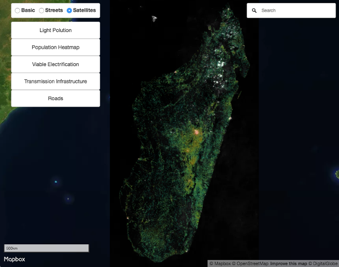
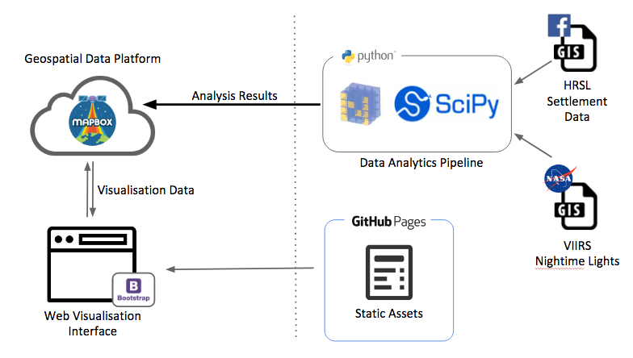

Accelerating the identification of electrification opportunities for underserved communities around the world using accurate remote sensing data. Application developed as an entry to the Department's Clean Energy Data Science Challenge 2017.
Project Code on: GitHub | Live Demo

The Challenge
This application is created as an entry to the State Department's Clean Energy Data Science Challenge 2017:
More than a billion people globally lack access to electricity and another billion lack access to reliable electricity, greatly impacting education, health, social and economic development. A major barrier to investment in this space is a lack of visibility into many countries’ renewable energy potential.
Your challenge is to find new ways to map this potential. Can you leverage multiple data sources to do, in two days, what could otherwise take many months (and millions of dollars) with traditional methods?
Creating actionable insights through algorithms, programs, and applications could be a game-changer for entrepreneurs, investors, and policymakers around the world and help to improve the lives of millions of people.
Our Team of Seven
- 2 Business Analysts / Researcher
- 1 Geospatial Data Engineer
- 1 Geospatial Data Scientist
- 1 Generalist Data Engineer
- 1 Frontend Engineer
- 1 Fullstack Engineer + GIS Operator (<- me)
The team was formed on the first day and most of the team members doesn't know each other prior to the event.
Design Philosophy
The design philosophy of the application is to utilize accurate remote sensing data to identify electrification opportunities for underserved communities around the world. The use of remote sensing data remove the reliance on traditional data sources for regions of the world that are often non-existent, inaccurate, incomplete and outdated
Approach
The application utilizes the recently released High Resolution Settlement Layer (HRSL) data (1 arc-second / ~30m resolution) to identify human settlements extents.
The electrification status of the these settlements are then determined using NASA's Visible Infrared Imaging Radiometer Suite (VIIRS) nighttime sensor data (~150m resolution).
Combining the two data set, the application identifies candidate communities where there are sufficient population density to make electrification potentially viable.
System Architecture

Frontend
The Frontend has a map-based UI utilizing Mapbox GL JS library and the Bootstrap framework. The following data layers are added to the visualization:
- HRSL (Settlement Density)
- VIIRS Nighttime Radiance
- Existing HV Electricity Transmission Lines
- Existing Roads
- Potential Viable Electrification Sites
Backend
The geospatial analysis results are stored within Mapbox's platform, removing the need for hosting our own geoserver. Raster data transformation was needed to create raster data layers to suit Mapbox's very specific bit-depth, projection and format specifications.
Lessons
Mapbox raster data has very specific requirements - 8-bit Geotiff with WGS 84/Pseudo-Mercator (EPSG:3857) with no Alpha. It's likely you'll need to do post-processing from the data analytics pipelines to fit the specification.
What's next?
Features are currently being incrementally added to the project. Future coverage for analysis include countries such as:
- Burkina Faso
- Ghana
- Haiti
- Ivory Coast
- Madagascar
- Malawi
- South Africa
- Sri Lanka